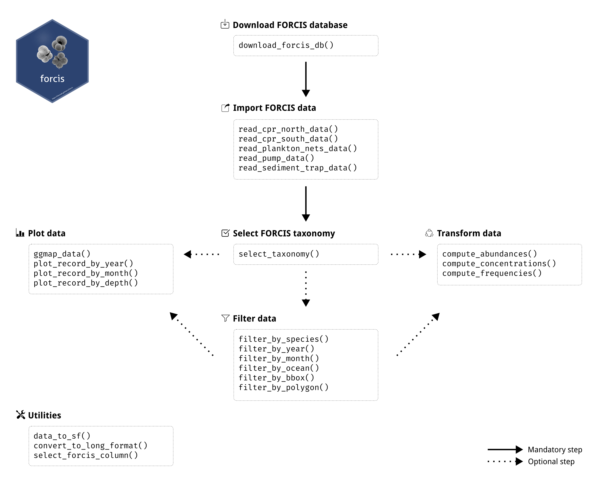
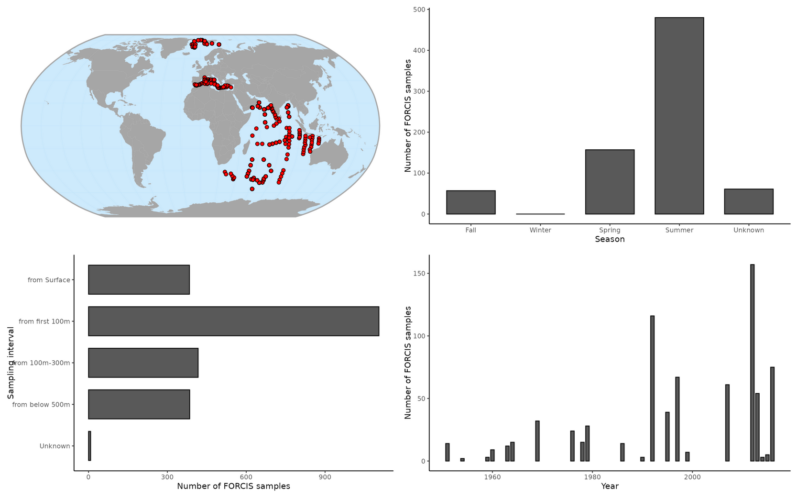

Table of contents
• Overview
• Installation
• Documentation
• Citation
• Contributing
• Acknowledgments
• References
Overview
The goal of the R package forcis is to provide an interface to the FORCIS database on global foraminifera distribution (Chaabane et al. 2023). This database includes data on living planktonic foraminifera diversity and distribution in the global oceans from 1910 until 2018 collected using plankton tows, continuous plankton recorder, sediment traps and plankton pump from the global ocean.

This package has been developed for researchers interested in working with the FORCIS database, even without advanced R skills. It provides basic functions to facilitate the handling of this large database, including functions to download, select, filter, homogenize, and visualize the data. It also enables users to explore the spatial distribution and temporal evolution of planktonic foraminifera.

Installation
You can install the development version from GitHub with:
## Install < remotes > package (if not already installed) ----
if (!requireNamespace("remotes", quietly = TRUE)) {
install.packages("remotes")
}
## Install dev version of < forcis > from GitHub ----
remotes::install_github("ropensci/forcis")N.B. The forcis package depends on the sf package which requires some spatial system libraries (GDAL and PROJ). Please read this page if you have any trouble to install forcis.
Finally you can attach the package forcis with:
Documentation
forcis provides five vignettes to learn more about the package:
- the Get started vignette describes the core features of the package
- the Database versions vignette provides information on how to deal with the versioning of the database
- the Select and filter data vignette shows examples to handle the FORCIS data
- the Data conversion vignette describes the conversion functions available in
forcisto compute abundances, concentrations, and frequencies - the Data visualization vignette describes the plotting functions available in
forcis
Citation
Please cite this package as:
Casajus N, Chaabane S, de Garidel-Thoron T, Giraud X & Greco M (2025) forcis: An R package for accessing, handling and analysing the FORCIS database. Journal of Open Source Software, 10(114), 9217. DOI: 10.21105/joss.09217.
You can also run:
citation("forcis")Contributing
All types of contributions are encouraged and valued. For more information, check out our Contributor Guidelines.
Please note that this package is released with a Contributor Code of Conduct. By contributing to this project, you agree to abide by its terms.
Acknowledgments
This package has been developed for the FRB-CESAB working group FORCIS that aims to understand the importance of the main stressors such as temperature and ocean acidification that govern foraminifera species distribution and calcification processes, with focus on present and near-future ocean impacts.
We want to thanks Khalil Hammami (@khammami) for his valuable contribution to this package.
References
Chaabane S, De Garidel-Thoron T, Giraud X, Schiebel R, Beaugrand G, Brummer G-J, Casajus N, Greco M, Grigoratou M, Howa H, Jonkers L, Kucera M, Kuroyanagi A, Meilland J, Monteiro F, Mortyn G, Almogi-Labin A, Asahi H, Avnaim-Katav S, Bassinot F, Davis CV, Field DB, Hernández-Almeida I, Herut B, Hosie G, Howard W, Jentzen A, Johns DG, Keigwin L, Kitchener J, Kohfeld KE, Lessa DVO, Manno C, Marchant M, Ofstad S, Ortiz JD, Post A, Rigual-Hernandez A, Rillo MC, Robinson K, Sagawa T, Sierro F, Takahashi KT, Torfstein A, Venancio I, Yamasaki M & Ziveri P (2023) The FORCIS database: A global census of planktonic Foraminifera from ocean waters. Scientific Data, 10, 354. DOI: 10.1038/s41597-023-02264-2.